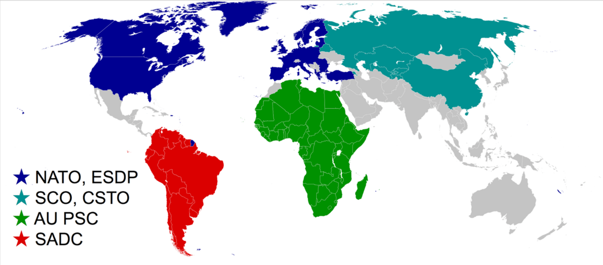
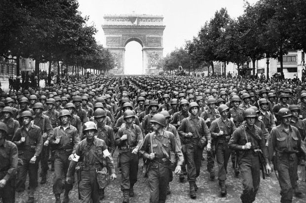

Sequence of Events
Start
World War II began in 1939 when Adolf Hitler ordered Nazi Germany to invade Poland on September 1, breaking multiple international agreements. Hitler wanted to expand German territory and gain control over Eastern Europe. Britain and France had promised to defend Poland, so when Germany attacked, they declared war on Germany on September 3. This invasion was the final step in a series of aggressive moves by Hitler, including taking over Austria and part of Czechoslovakia. The League of Nations failed to stop him, and many countries hoped to avoid another war, which allowed Germany to grow more powerful. Once Poland was invaded, however, the world could no longer ignore the threat, and the conflict quickly spread across Europe, Asia, Africa, and the Pacific, becoming the largest and deadliest
Alliances
During World War II, two major alliances shaped the conflict. The Allied Powers included the United States, the United Kingdom, the Soviet Union, China, and many other nations working together to stop aggression and defend freedom. The Axis Powers were led by Germany, Italy, and Japan, who aimed to expand their territories and control large parts of the world. These alliances meant that battles were fought across Europe, Africa, Asia, and the Pacific, turning the war into a truly global conflict. Climax
The climax of World War II came between 1943 and 1944, when the Allies launched massive operations that turned the war in their favor. In Europe, the D-Day invasion of Normandy in 1944 opened a new front against Germany, forcing them to fight on several sides at once. In the Pacific, the United States won key battles such as Midway and Guadalcanal, stopping Japan’s expansion. These major victories marked the turning point when it became clear the Allies were gaining control and the Axis Powers were beginning to fall. decline
The decline of World War II began in 1943, when the Axis Powers started losing major battles on multiple fronts. Germany was pushed back in the Battle of Stalingrad, Italy was invaded by the Allies, and Japan began losing territory in the Pacific. The Axis nations were running out of resources, soldiers, and control. As the Allies gained strength and coordination, the Axis forces were slowly weakened and pushed toward collapse.